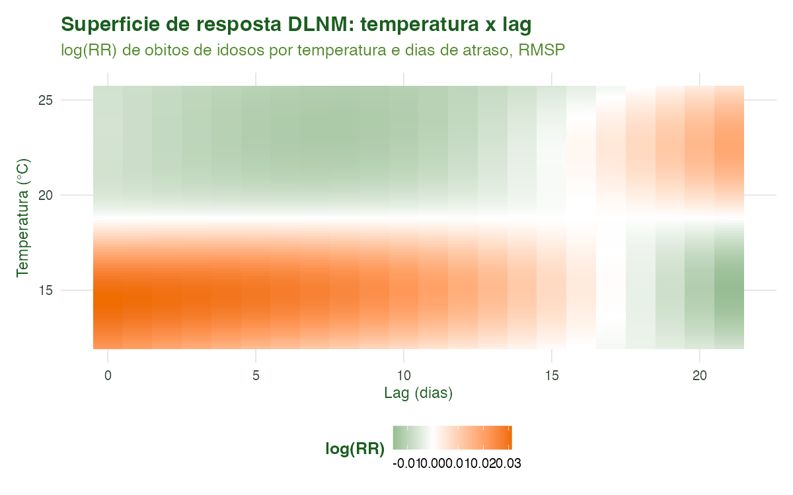
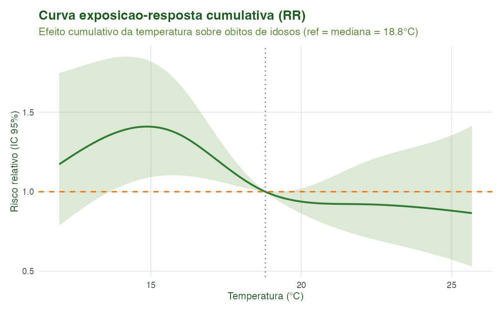
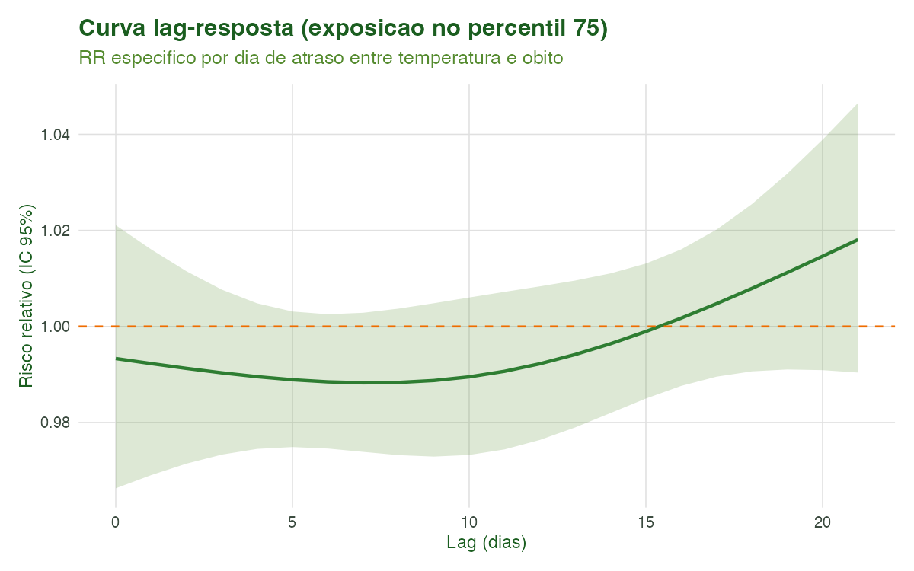
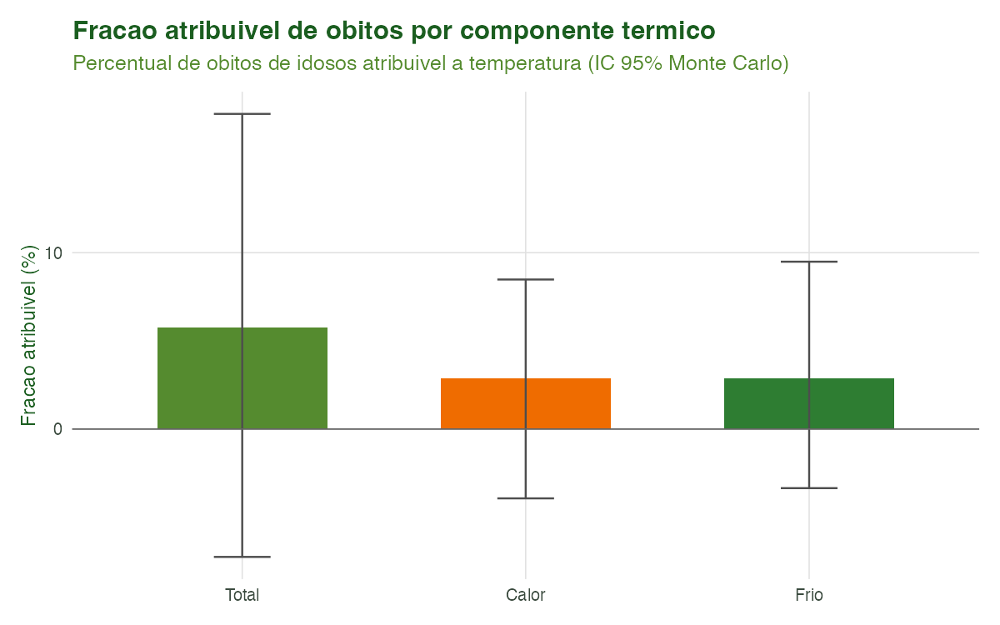

Tutorial 9: Modelagem Epidemiológica (DLNM e Carga Atribuível)
Equipe climasus4r
22/06/2026
Source:vignettes/09-modelagem.Rmd
09-modelagem.RmdObjetivo
Ao final deste tutorial você será capaz de transformar uma
série diária de saúde alinhada ao clima em inferência
epidemiológica: estimar a relação não-linear e
defasada entre temperatura e mortalidade com um
DLNM (sus_mod_dlnm()), quantificar a
carga atribuível ao calor e ao frio
(sus_mod_af()), e conhecer as demais ferramentas do chapéu
bioestatístico do climasus4r — séries temporais
interrompidas (sus_mod_its()), case-crossover
(sus_mod_casecrossover()) e meta-análise multi-cidade
(sus_mod_pool()).
A modelagem é a última etapa do pipeline. Ela consome a saída das etapas anteriores (a série de saúde agregada do Tutorial 4 e a exposição climática alinhada dos Tutoriais 7 e 8) e produz estimativas de risco relativo, frações atribuíveis e visualizações prontas para publicação.
Contexto científico
A epidemiologia ambiental moderna trata a associação entre uma exposição ambiental (temperatura, poluentes) e um desfecho diário de contagem (óbitos, internações) como um problema não-linear e defasado no tempo. O calor extremo mata no mesmo dia ou em 1–2 dias (efeito agudo); o frio mata ao longo de uma a duas semanas (efeito tardio e prolongado). Modelar apenas a temperatura do dia subestima o efeito do frio.
O Distributed Lag Non-linear Model (DLNM) de
Gasparrini, Armstrong & Kenward (2010) resolve isso
com uma cross-basis: o produto externo de duas bases de
splines — uma na dimensão da exposição (captura a curva
em U/J: risco sobe no frio e no calor) e outra na dimensão do
lag (captura como o efeito se distribui ao longo dos
dias). A implementação em R é o pacote dlnm
(Gasparrini, 2011), sobre o qual o
climasus4r constrói sus_mod_dlnm().
O ajuste segue as boas práticas de regressão de séries temporais em epidemiologia ambiental sistematizadas por Bhaskaran et al. (2013): modelo log-linear quasi-Poisson (robusto à superdispersão), controle de tendência de longo prazo e sazonalidade por spline natural do tempo, e ajuste para dia da semana. A fração atribuível decompõe a carga total de eventos em componentes de calor e frio (Gasparrini & Armstrong, 2013).
Caso condutor. Investigamos a temperatura e os desfechos de saúde em idosos (60+) na Região Metropolitana de São Paulo, 2014–2019 (respiratórias J00–J99 e cardiovasculares I00–I99). Aqui juntamos a série diária de óbitos (
caso_serie.rds, Tutorial 4) com a temperatura da estação INMET A701 (São Paulo – Mirante de Santana) já alinhada (caso_clima_estacao.rds, Tutorial 7), montamos a estrutura de lags distribuídos e ajustamos o DLNM para estimar a curva exposição-resposta e a carga atribuível ao calor e ao frio.
Dados utilizados
| Entrada | Origem | Conteúdo | Papel |
|---|---|---|---|
dados/caso_serie.rds |
Tutorial 4 | Série diária de óbitos (idosos 60+) | Desfecho n_obitos
|
dados/caso_clima_estacao.rds |
Tutorial 7 | Temperatura diária da estação A701 | Exposição tair_dry_bulb_c
|
As duas séries são unidas por data. A exposição é
então expandida em colunas de lag distribuído
(tair_dry_bulb_c_lag0, …,
tair_dry_bulb_c_lag21), estrutura que em fluxo completo é
produzida por
sus_climate_aggregate(temporal_strategy = "distributed_lag", lag_days = 21).
O script protege a etapa com
requireNamespace()/tryCatch() e, se as
entradas faltarem, gera uma série sintética mínima
realista (com sinal temperatura-mortalidade em V) apenas para
ilustrar.
Pipeline completo
Os blocos abaixo reproduzem o que
scripts/tutorial_09_modelagem.R executa.
library(climasus4r)Montar a entrada do DLNM (lags distribuídos)
O sus_mod_dlnm() espera um climasus_df no
estágio "climate" e tipo "distributed_lag",
com a coluna date, o desfecho e as colunas
{variável}_lag0 … _lagL. Em fluxo real, isso vem de
sus_climate_aggregate():
df_dl <- sus_climate_aggregate(
health_data = caso_serie, # série de saúde (do Tutorial 4)
climate_data = caso_clima_estacao, # temperatura alinhada (do Tutorial 7)
climate_var = "tair_dry_bulb_c",
temporal_strategy = "distributed_lag",
lag_days = 21,
lang = "pt"
)Ajustar o DLNM (sus_mod_dlnm)
Cross-basis com exposição em spline natural de 4
graus de liberdade (captura o U/J calor+frio) e lag em
spline natural de 3 graus (decaimento suave), família
quasi-Poisson e controle sazonal automático
(dof_per_year = 6, recomendado para o Brasil
subtropical):
fit <- sus_mod_dlnm(
df = df_dl,
outcome_col = "n_obitos",
climate_col = "tair_dry_bulb_c",
lag_max = 21,
argvar = list(fun = "ns", df = 4), # dimensão exposição
arglag = list(fun = "ns", df = 3), # dimensão lag
family = "quasipoisson",
dof_per_year = 6L, # gl/ano para sazonalidade
lang = "pt"
)
print(fit)
fit$exposure_response # RR cumulativo na grade de percentis
fit$lag_response # RR por lag no percentil 75
fit$diagnostics$disp_ratioFração atribuível ao calor e ao frio (sus_mod_af)
A partir do DLNM ajustado, decompomos a carga total de óbitos em componentes de calor (acima do limiar de conforto) e frio (abaixo), com IC por simulação de Monte Carlo:
af <- sus_mod_af(
fit = fit,
by = "month", # quebra mensal opcional
nsim = 200L, # use 5000L para qualidade de publicação
lang = "pt"
)
print(af)
af$total # FA/NA total, calor e frio
af$by_period # quebra mensalVisualizar (sus_mod_plot_dlnm)
O pacote oferece visualizações cientificas prontas — curva exposição-resposta, lag-resposta, superfície 3-D, contorno, fatias por lag, distribuição e série temporal:
sus_mod_plot_dlnm(fit, type = "overall", lang = "pt") # exposição-resposta
sus_mod_plot_dlnm(fit, type = "contour", lang = "pt") # superfície log(RR)
sus_mod_plot_dlnm(fit, type = "lag", lang = "pt") # lag-respostaCaracterísticas das funções
sus_mod_dlnm() — Distributed Lag Non-linear Model
| Argumento | Essencial? | Descrição |
|---|---|---|
df |
sim |
climasus_df em stage = "climate",
type = "distributed_lag"
|
outcome_col |
sim | Coluna de contagem diária (ex.: "n_obitos") |
climate_col |
opcional | Base da exposição sem sufixo _lagN; NULL
autodetecta |
lag_max |
opcional | Lag máximo; NULL detecta do maior _lagN
presente |
argvar |
opcional | Base da exposição (ex.:
list(fun = "ns", df = 4)) |
arglag |
opcional | Base do lag (ex.:
list(fun = "ns", df = 3)) |
family |
opcional |
"quasipoisson" (padrão), "poisson",
"negbin" (→ quasi) |
ns_df / dof_per_year
|
opcional | Graus de liberdade do spline temporal (sazonalidade) |
ref_value |
opcional | Valor de referência (RR = 1); NULL usa a mediana |
covariates |
opcional | Confundidores lineares adicionais (umidade, etc.) |
Retorno: um objeto climasus_dlnm com
$model (GLM), $crossbasis, $pred
(crosspred em grade de 100 pontos),
$exposure_response, $lag_response,
$models (resumo de uma linha), $data_daily e
$diagnostics (dispersão, autocorrelação de Ljung-Box,
AIC).
sus_mod_af() — Fração e Número Atribuível
| Argumento | Descrição |
|---|---|
fit |
Objeto climasus_dlnm de
sus_mod_dlnm()
|
threshold |
Limiar que separa calor (acima) e frio (abaixo); NULL
usa ref_value
|
pred_at |
Percentis das faixas (padrão
c(0.75, 0.90, 0.95, 0.99)) |
by |
Quebra temporal: "month", "year",
"season" ou NULL
|
nsim |
Simulações de Monte Carlo para o IC (padrão 1000L) |
alpha |
Nível de significância (padrão 0.05 → IC 95%) |
Retorno: climasus_af com
$total (total/calor/frio), $by_quantile,
$by_period, $daily e $custom.
sus_mod_its() — Séries Temporais Interrompidas
Regressão Poisson segmentada para o efeito de intervenções (políticas, eventos extremos, pandemia) sobre uma série de contagem (Bernal et al., 2017).
| Argumento | Descrição |
|---|---|
data |
climasus_df
(aggregate/climate) ou data.frame
com data + contagem |
outcome_col / date_col
|
Colunas de desfecho e data |
interruption_dates |
Uma ou mais datas de intervenção (dentro do intervalo) |
harmonics |
Pares senoidais para sazonalidade (padrão 2L) |
family |
"quasipoisson" (padrão) ou "poisson"
|
counterfactual |
Projeta a tendência pré-intervenção (padrão TRUE) |
Retorno: climasus_its com
$effects (mudança de nível e de tendência),
$counterfactual e $segments.
sus_mod_casecrossover() — Case-Crossover Estratificado
no Tempo
Cada estrato temporal (mês/semana) é seu próprio controle, removendo tendência e sazonalidade por desenho (Maclure, 1991; Armstrong et al., 2014).
| Argumento | Descrição |
|---|---|
data |
climasus_df ou data.frame com
date, desfecho e exposição |
outcome_col / exposure_col
|
Desfecho e exposição (sem autodetecção) |
stratum |
"month" (padrão), "week" ou coluna
existente |
lag |
Lag inteiro único ou vetor (média móvel, ex.: 0:6) |
method |
"conditional_poisson" (padrão) ou
"clogit"
|
family |
"quasipoisson" (padrão) ou "poisson"
|
Retorno: climasus_casecrossover com
$or_table (OR, IC, p) e $diagnostics.
sus_mod_pool() — Meta-análise Multi-cidade
Combina estimativas DLNM de várias cidades por meta-análise
multivariada (REML via mvmeta), produzindo curva
combinada, heterogeneidade (Q, I²) e BLUPs por cidade (Gasparrini et
al., 2012).
| Argumento | Descrição |
|---|---|
fits |
Lista nomeada de objetos climasus_dlnm
(mesma cross-basis) |
method |
"reml" (padrão), "ml" ou
"fixed"
|
blup |
Calcula predições BLUP por cidade (padrão TRUE) |
pred_at |
Percentis da tabela combinada |
Retorno: climasus_pool com
$exposure_response, $lag_response,
$heterogeneity, $city_table e
$blup_preds.
Formulação estatística
O DLNM modela a contagem diária como quasi-Poisson com média . O preditor log-linear combina a cross-basis — o efeito da história de exposição — com o controle de sazonalidade (spline natural do tempo) e de dia da semana (DOW):
A cross-basis é o produto externo de uma base na exposição
(argvar) e uma base no lag (arglag). O
efeito cumulativo ao longo de todos os lags, no nível
de exposição
relativo à referência
,
é
A fração atribuível acumulada associada à história de exposição segue a forma (Gasparrini & Armstrong, 2013):
com o número atribuível diário somado ao longo do período e o IC obtido por simulação de Monte Carlo dos coeficientes da cross-basis.
Decisões de modelagem
-
Superdispersão. Contagens de óbitos tipicamente têm
variância maior que a média
().
A família quasi-Poisson infla o erro-padrão por
e é recomendada quando a razão de dispersão excede ~1,5 (Armstrong,
2006). A alternativa binomial negativa (NB) é incompatível com
dlnm::crossbasis()e oclimasus4ra redireciona para quasi-Poisson. -
Escolha de nós (knots) e lags. Para a
exposição,
nscom 4 gl captura bem a forma em U/J (frio + calor); 3 gl é mais conservador, 5 gl exige N grande. Para o lag,nscom 3 gl modela o decaimento suave típico de temperatura-mortalidade; o lag máximo de 21 dias cobre o efeito tardio e prolongado do frio (Gasparrini, 2011). -
Sazonalidade. O spline natural do tempo absorve
tendência de longo prazo e o ciclo anual que confundem a associação.
Recomenda-se ~
dof_per_year = 4para 1–2 anos e 6–8 para o Brasil subtropical e doenças com forte sazonalidade (Bhaskaran et al., 2013). Subajustar deixa autocorrelação residual (teste de Ljung-Box em$diagnostics); superajustar consome o sinal.
Resultados ilustrados

Figura 1. Superfície de resposta do DLNM:
log(RR) de óbitos de idosos em função da temperatura (eixo
y) e do dia de atraso (eixo x). Tons em laranja indicam risco aumentado
(calor, lags curtos); tons em verde, risco reduzido. A estrutura
bidimensional revela quando, após cada nível de exposição, o efeito se
manifesta.

Figura 2. Curva exposição-resposta cumulativa (RR e IC 95%) somada sobre todos os lags, centrada na mediana da temperatura (referência, RR = 1). A forma em U/J — risco crescente no frio e no calor — é a assinatura clássica da relação temperatura-mortalidade.

Figura 3. Curva lag-resposta no percentil 75 da exposição: RR específico por dia de atraso entre a temperatura e o óbito. Permite distinguir o efeito agudo (lags curtos) do efeito tardio e prolongado (lags longos).

Figura 4. Fração atribuível de óbitos (%) decomposta em total, calor e frio, com IC 95% por Monte Carlo. Em climas subtropicais a fração do frio costuma superar a do calor, refletindo o efeito prolongado das baixas temperaturas sobre idosos.
| Parametro | Valor |
|---|---|
| Exposicao climatica | tair_dry_bulb_c |
| Desfecho | n_obitos |
| Familia GLM | quasipoisson |
| Lag maximo (dias) | 21 |
| N observacoes (dias) | 2170 |
| Valor de referencia (°C) | 18.8 |
| RR no P75 (vs referencia) | 0.922 [0.725; 1.172] |
| Lag de efeito pico (dias) | 21 |
| Razao de dispersao | 1.05 (adequate) |
| AIC (Poisson) | 11800.7 |
| Componente | FA (%) | NA (obitos) | N obitos |
|---|---|---|---|
| Total | 5.78 [-7.25; 17.87] | 1624 [-2037; 5018] | 28081 |
| Calor | 2.90 [-3.93; 8.48] | 814 [-1102; 2382] | 28081 |
| Frio | 2.89 [-3.35; 9.49] | 811 [-941; 2665] | 28081 |
Referências
- Armstrong, B. (2006). Models for the relationship between ambient temperature and daily mortality. Epidemiology, 17(6), 624–631.
- Bernal, J. L., Cummins, S., & Gasparrini, A. (2017). Interrupted time series regression for the evaluation of public health interventions: a tutorial. International Journal of Epidemiology, 46(1), 348–355. https://doi.org/10.1093/ije/dyw098
- Bhaskaran, K., Gasparrini, A., Hajat, S., Smeeth, L., & Armstrong, B. (2013). Time series regression studies in environmental epidemiology. International Journal of Epidemiology, 42(4), 1187–1195. https://doi.org/10.1093/ije/dyt092
- Gasparrini, A. (2011). Distributed lag linear and non-linear models in R: the package dlnm. Journal of Statistical Software, 43(8), 1–20. https://doi.org/10.18637/jss.v043.i08
- Gasparrini, A., Armstrong, B., & Kenward, M. G. (2010). Distributed lag non-linear models. Statistics in Medicine, 29(21), 2224–2234. https://doi.org/10.1002/sim.3940
- Gasparrini, A., & Armstrong, B. (2013). Reducing and meta-analysing estimates from distributed lag non-linear models. BMC Medical Research Methodology, 14, 70. https://doi.org/10.1186/1471-2288-14-70
- Maclure, M. (1991). The case-crossover design: a method for studying transient effects on the risk of acute events. American Journal of Epidemiology, 133(2), 144–153.
Navegação
- Voltar ao hub de tutoriais
- Anterior: Tutorial 8 — Dados Climáticos e Ambientais em Grade
- Este é o último tutorial da série do pipeline
climasus4r.